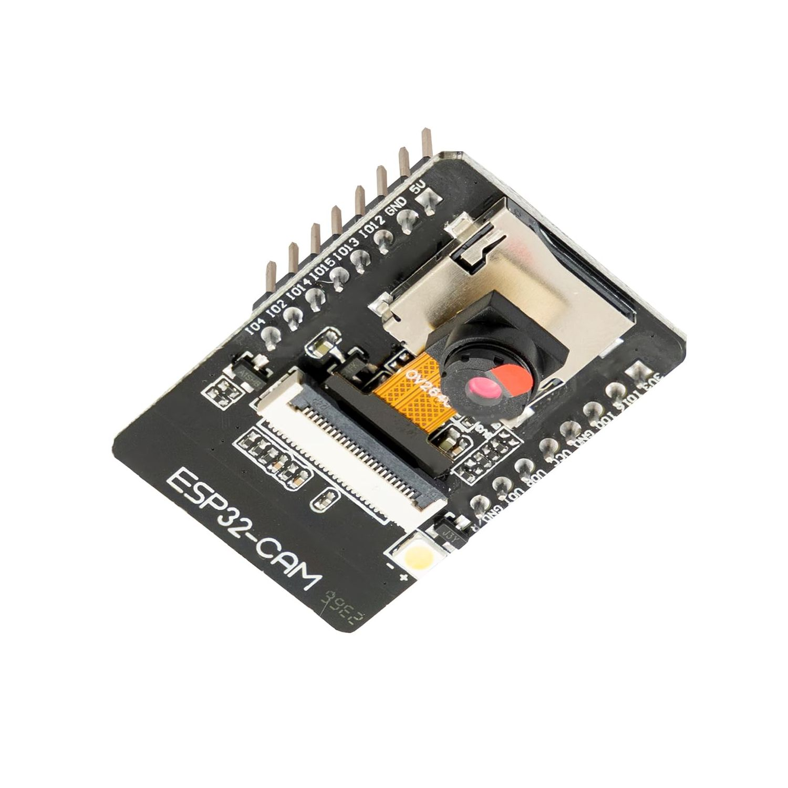

'CameraWebServer' ist ein Beispielprogramm der Arduino IDE für die ESP32-CAM.
Mit geringfügigen Anpassungen verbindet das Modul mit dem WLAN und startet einen Webserver.
Über dessen Webseite kann man:
- das Livebild der Kamera ansehen,
- einzelne Fotos aufnehmen,
- Auflösung, Helligkeit, Kontrast und weitere Kameraeinstellungen ändern,
- je nach Modul Funktionen wie Blitz-LED oder Gesichtserkennung nutzen.
Die IP-Adresse der Webseite wird nach dem Start im seriellen Monitor der Arduino IDE angezeigt.
Das Modul ESP32-Cam ist ein kleines Kamera-Modul mit einem ESP32-Mikrocontroller.

Das Modul kann für verschiedene Projekte eingesetzt werden, z. B. für Überwachungskameras oder Gesichtserkennung.
Links
CameraWebServer 0.8.1 als ZIP-Datei herunterladen
Anleitung zur Inbetriebnahme und Nutzung des ESP32-CAM-Moduls
Anleitung zur BLE-Konfiguration mit nRF Connect
Probleme und Lösungen bei der Projektentwicklung
Dokumentation zur aktuellen Version 0.8.1
ebook: ESP32-CAM - AI-Tinker-Model (AZ-Delivery)
WindowsPhotoClient
Der WindowsPhotoClient fordert ein neues Foto vom ESP32-CAM an, zeigt es auf dem PC an und kann es lokal als JPEG-Datei speichern.
Python-Programm ansehen und herunterladen